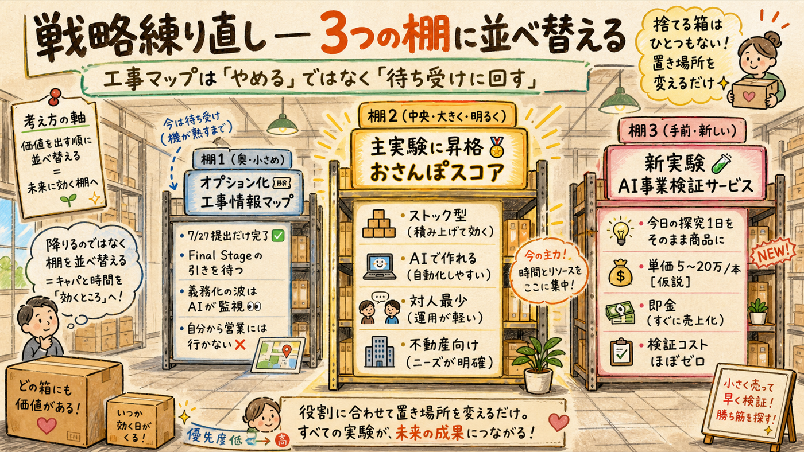
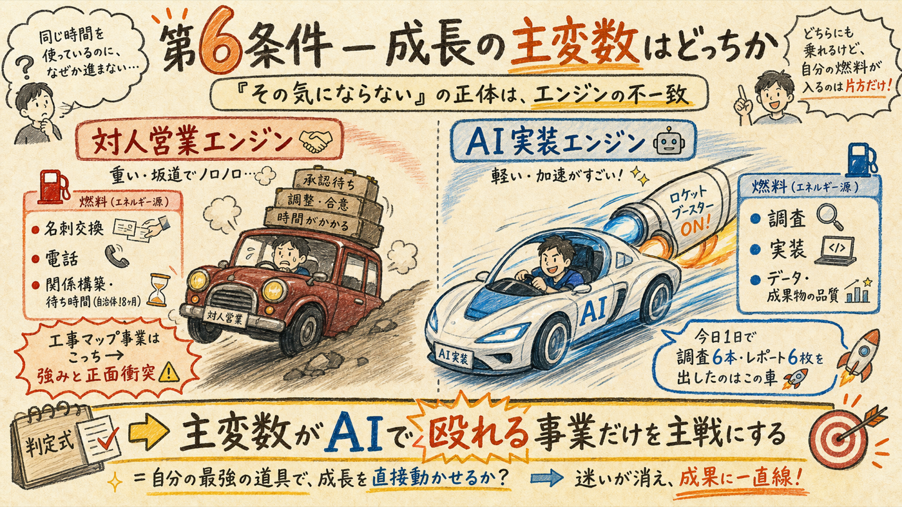
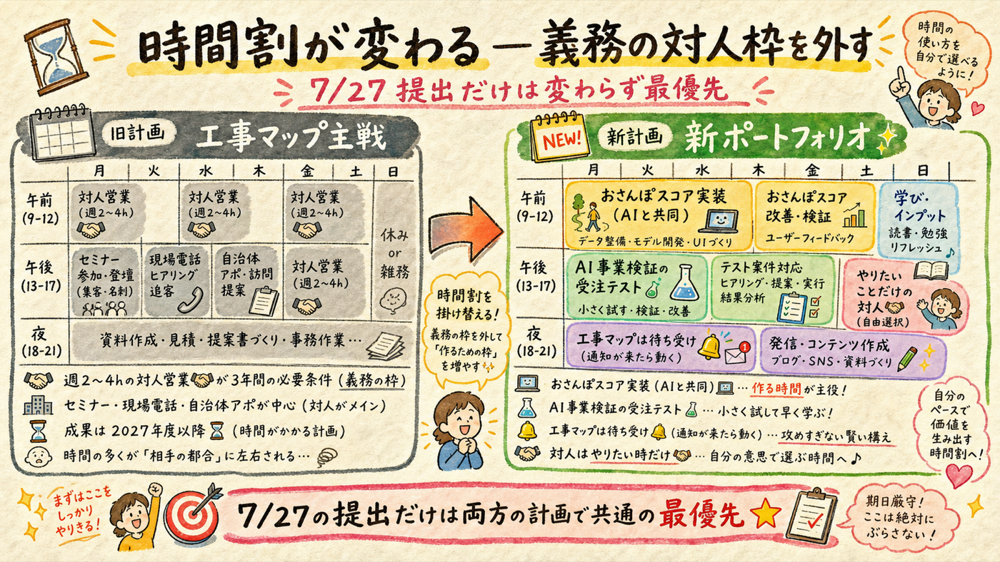
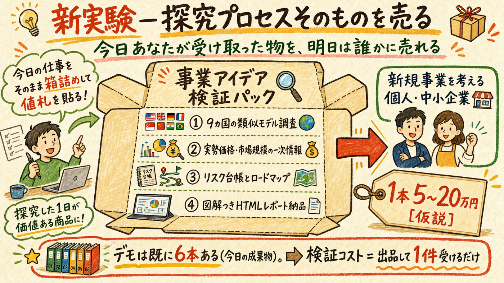

「労力の割に儲からない気がする」— この直感は、今日集めた一次情報と完全に一致している。数字で言えば「3年間の対人営業で年商240〜400万・確度3〜4割」で、桁が開く条件（義務化）は自分で起こせない外生イベント。降りるのは合理的判断だ。ただし、この1週間の探究で得た資産は消えない。工事マップを「待ち受けのオプション」に降格し、資産を別の形で回収するポートフォリオに組み替える。
「やめる」ではなく「置き場所を変える」

| 棚 | 中身 | やること / やらないこと |
|---|---|---|
| 🎫 オプション化 工事情報マップ | 世界調査済みの事業設計一式＋都知事杯の舞台 | やる: ①7/27提出（全シナリオで価値）②Final Stage進出時に実装支援の「引き」が来たら再評価 ③義務化前兆（占用電子化・警察オンライン化・xROAD）のAI定点監視。やらない: 自発的な自治体営業、現場ヒアリング5件計画、現場HP受託の電話営業 — 対人が主変数の活動すべて |
| 🏅 主実験に昇格 おさんぽスコア | 歩行者安全スコアの不動産向けAPI（5条件5/5・国内空白・Walk Score実証済み） | 8月試作（AIが主担当）→9月デモ公開→中堅サイトへメール提案。撤退基準は変更なし（2027年3月に有償2社未満で凍結）。対人はメールのみ |
| 🧪 新実験 AI事業検証サービス | 今日の探究プロセスそのものの商品化 [仮説・要市場テスト] | 「事業アイデアを一次情報つきで1〜3日検証、図解HTMLレポート納品」を1件受けてみる。検証コストほぼゼロ（デモは今日の6本が既にある） |
5条件フィルターに1つ足りなかった

工事マップは5条件フィルターを4/5で通過していた。それでも気が乗らないのは、フィルターに「成長の主変数を、自分の最強の道具で動かせるか」という第6条件が無かったから。工事マップの成長を決めるのは、名刺の枚数・電話の本数・自治体の予算サイクル（12〜18ヶ月）— つまり対人と待ち時間で、AIと実装力は補助輪にしかならない。あなたの強み（Ideation・Learner・Input・Maximizer）は「調べ、着想し、作り、磨く」に向いていて、「同じ相手に通い続ける」には向いていない。今日1日で9カ国の検証と6本のレポートを出したエンジンは、この事業では主機関にならない — それが違和感の正体。
今後の事業選定ルール（固定）: 主戦に置いていいのは「成長の主変数がAIで殴れる変数（調査・実装・データ・成果物品質）である事業」だけ。対人・待ち時間が主変数の事業は、どれだけ市場が良くてもオプション枠まで。
1週間で得た、消えない資産5つ
| 資産 | 使い道 |
|---|---|
| ① おさんぽセーフティ実物＋都知事杯出場実績 | 7/27で確定。どの事業に進んでも「動くものを作って公的な場に出した」実績として機能 |
| ② マップ×オープンデータのパイプライン実装力 | おさんぽスコアの土台にそのまま転用（主実験の初期コストが激減している） |
| ③ AI駆動の高速一次情報検証体制 | 本日実績: 9カ国・調査6本・図解レポート6枚を1日で。これ自体が商品になる（セクション04） |
| ④ 工事・道路・GovTechのドメイン知識 | オプションが呼ばれた時（Final Stage・義務化の波）に即座に再起動できる |
| ⑤ 公開可能な調査レポート6本 | AI事業検証サービスの営業サンプル。ポートフォリオとして今すぐ使える |
「週2〜4時間の対人行動が3年間の必要条件」から解放される

1つだけ正直な注意: 「対人が主変数の事業を避ける」は強みへの最適化だが、どの事業でも最後の販売局面には人が出てくる（おさんぽスコアでもメール先の返事の向こうには人がいる）。避けたのは「対人が成長の主変数であること」であって、対人ゼロの事業は存在しない。ここは混同しない。
今日あなたが受け取った物を、明日は誰かに売れる [仮説・要市場テスト]

今日1日で起きたことを客観的に見ると: 「工事AIという事業アイデア」に対して、類似モデルの世界調査・実勢価格と市場規模の一次情報・リスク台帳・ロードマップ・図解レポート6本が、24時間以内に出てきた。これはコンサル会社が数週間・30〜100万円で売っている簡易市場調査と同じ種類の成果物で、新規事業を考える個人事業主・中小企業・副業検討者に、1本5〜20万円で売れる可能性がある [仮説]。
10月末に新しい判断ゲートを置く
| いつ | やること | 担当 |
|---|---|---|
| 今週 | ① おさんぽセーフティ提出3手（login→deploy→提出） | あなた（AI伴走） |
| 今週 | ② セミナー申込は取り消し（旧計画の義務。行きたければ趣味として行くのは自由） | — |
| 8月 | おさんぽスコア試作＋AI事業検証サービスの出品ページ作成（文面・構成はAI） | AI主担当 |
| 9月 | スコアのデモ公開＋検証サービス1件目の受注テスト | あなたは公開ボタンと返信のみ |
| 10月末 | 新ゲートG-P: 2実験の初収益・手応え・楽しさで主戦を決定。両方ダメなら、Project OS全体（BacktraceEngine等）と突き合わせて次の探索テーマを選ぶセッションを持つ | あなたが判断 |